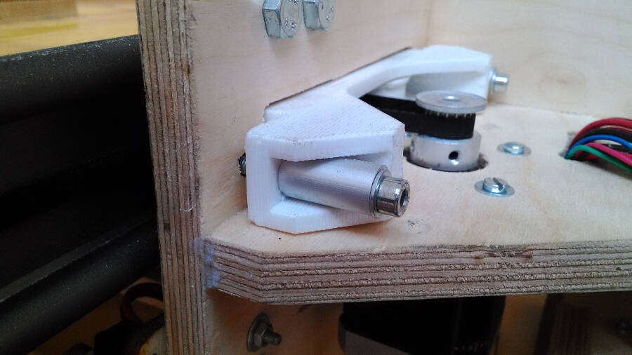
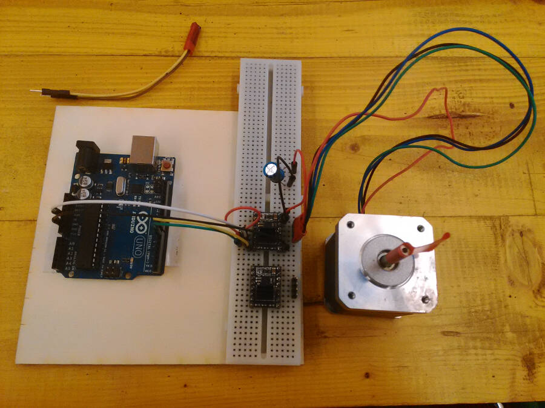

Final project: Development
Electronic
The board is designed based on the schematic of the CNC board by Ryan Pourcillie

His schematic was mainly useful as a reference for the capacitors used and the solution used.
Here the schematic I made, based on his:
And here the board:

It was pretty easy to connect almost everythig, these are the main issues:
- One of the traces must pass on the corner of ATMEGA 328P
- The endstops hve no external pull-up resistors (i hope to fix this using the internal ones)
- The enable of the stepper drivers and one of the endstop must be connected with jumpers
Beside be careful in placing the traces in the center of the corner, I did a small modification on the shape of the pad in inkscape, just to have a little bit more room. So here it is the original image:
And here the small adjustment done in inkscape:
 I had no problem to solder the ATMEGA 328p without shortcircuiting anything.
I had no problem to solder the ATMEGA 328p without shortcircuiting anything.
To make the board a little bit easier to read, I add some simple "silks" (like "GND", "Z - Axis", "+", etc.). They're pretty fragile, but still useful to have.
 Here the jumper used:
Here the jumper used:

The driver used are the DRV8825 Stepper Motor Driver, that can get to 1,5 A without cooling. I'll probably need more current, but it coul work for the tests. To improve the performances I added a passive cooler
The board has a connector for the FTDI and four pins to be programmed (SCK, MISO, MOSI, RESET). There pins can be removed after the debugging.

So far, I tested the board and it seems there are no electrical issues and the clock is working properly (I used a simple blink and a watch to do a very basic test).

Debug and V0.2
after the first test i noticed the following problems:
- Return of current from the motors power supply
- Add (and then take away) pull-up resistors
- Mistakes in pin mapping, because of the way the Grbl is written
- Wrong stepper drivers wiring
- TX\RX connection flipped
the board had two different circuits with a common GND, one at 12V for the motor and one at 5V from the FTDI cable. I tried to power the board with the FTDI and to upload the blink to check clock and the main circuit and everything worked fine. After that I tried to power the motod circuit at 12V. I had no shortcircuit but, because of something I don't know, from the 12V circuit an instable current (approximately from 1.8V to 2.7V), passed to the 5V circuit.
/* immagine con tester */
I tried to cut some traces without finding the problem, so it's still a mistery.
Add (and then take away) pull-up resistors
The endstops have no pull-ups resistors (too complex to wire everything on the board), thinking to use the internal ones in the ATMEGA328p. After I tested (unsucessfully) the board, I thought to avoid any problem by adding external resistors.
\*foto resistenze volanti*\
checking better the Grbl I actually noticed that the resistors are activated by default so i decided to desolder the external i added and I'm not going to try to modify the board for that.
Mistake in pin mapping, because of the way the Grbl is written
I will use a modified version of Grbl, both because of the documentation you can find about it, and because i can fit it in the ATMEGA 328P. Reading the code I noticed that some pins cant be remapped: the information about step and dir of the motors are writtend not pin by pin but writing the Port and the DDR, so it's important to don't change over a certain limit. Here the wrong modification I was doing
/*immagine con mapping */
This wasn't enough but it's definitely something to integrate on the next one.
I noticed that inverting two connections the mapping could be done properly, so I modified the board for the testing
/* immagine con i cavetti volanti */
Wrong stepper drivers wiring
I followed the wiring of original board, but the stepper driver I'm using (the DRV8825), has a compatible but not exactly identical wiring. Here the original drivers used on the shapeoko board
 While the one I used are
While the one I used are
 The main mistake was actually another one: I wired microstepping and emable to 5V, while to enable the board it should be grounded.
The main mistake was actually another one: I wired microstepping and emable to 5V, while to enable the board it should be grounded.
Y movement
The most tricky part is probably how to move the machine along Y. I started following this solution:


This allow me to dismount the machine without too many problems.
The first solution to test is to use a circular belt moved by a stepper that use a secont linear belt glued to the rail as a rack.

A - Circular belt
B - Pulley
C - Y motor
D - Linear belt (rack)
The solution I made so far is wrong dimensionally but the idea could work
It works like a caterpillar track that moves over another timing belt used as a rack.
 To guarantee the proper pressure and avoid backlash, the structure is preloaded with springs
To guarantee the proper pressure and avoid backlash, the structure is preloaded with springs

Z movement
To move in Z the entire machine is sliding down. This seems to me the most rigid way to move the structure instead of have a Z axis made as usual. The objective was to keep the force loop as short as possible.
Here two Z position compared (first high and then low)

The movimentation is done with two motors and two threaded bars. To avoid the backlash I designed two 3D printed parts preloaded with a spring and aligned with four screws

Second (and last) round of development
Following the suggestion to Spiral Develop the project, I decided to restart to implement all the problem I found during the first round. It was planned a third round as well, but because both time and costs, I stopped at the second.
Things to implement
Here a quick overview of the implementations. Some are very simple, while some other took me a long time.
Belt tensioner
this is a pretty crucial piece in the project, and it gave me a lot of troubles. the main problem was to keep the closed belt properly tensioned and prevent to have a slipping belt.
To guarantee a good power transmission between the belt attached to the linear rail and the one touching the motor the tensioner is kept pressed with two springs. When you slide the guide, the tensioner slide back a bit and the springs keep the proper pressure
The back side is that the closed belt completely lost the tension.
It's possible to notice that there is another problem: the screws used to keep the stepper are touching the border of the piece. I temporarely solved it cutting and drilling in the plastic to go on doing tests. But it's definitely not a permanent solution.
Here a test on the movement. Without stress it's working, but it need to be implemented a lot to actually work reliably while the machine si milling
The best way to keep the two bearings was to make a sort of screw as a pin.
First of all it's to check how logn you need it.
The second step is to cut the head to easily screw it inside.

ater that it's enough to cut it. I used a angular grinder, but it's possible to cut it with a hand tool as well.
I decided to go on with a different solution, with no closed belt, but following the original suggestion. This made much more complex to place and remove the working plane, but at least ti was working. To test it and avoid the "spring problem" I add two stops temporarely kept in position by a couple of screws.
Here the way it behaved without
The second version has no springs but it's regulated with two M4 screws.

In this case place and remove the linear guide is more complex and it takes a specific process.
the easier way to keep the belt in tension was to use two washers and a screw.

Bearing rings position
To understand where to place the bearing ring to keep the tension i drawn the arch the central hole was doing while movinf around the pulley. Opening it a little bit the tension was increasing moving it closer to the pulley.
Alining the linear sleeves
When you tight the bolds of the linear sleeves, they slightly rotate, this mean that the two holes are not aligned anymore. This increase the friction a lot, so, before sliding the linear guide inside, I used a shorter version to straight them back.

How to assemble some complex parts
Y linear guide
The linear guide is composed by three different elements: the linear guide itself, an aluminium profile (L shape, 40x20x1.5 mm) and a belt glued to the surface that works like a rack.
First of all you have to drill holes in the aluminium profile. This will be used to screw everything to the working bed. A 3mm hole every 25cm should be enough.
Even if there are holes in the linear guide for the screws, we will not use them. This cause they're gonna be covered by the belt, needed for the "Caterpillar movement". At the moment it's not working, but it's something I'm going to improve asap.
To glue them togheter I used a bicomponent glue that resist up to 180kg\cm2. This should be more than enough.
After 20 minutes it seems to be very solid.
To Glue the belt I used a superglue (cyanoacrylic glue) because of the thickness of the layer and the time needed to react.
Being somethign you have to slide in and take out, pretty often, I glued the border as well, to avoid to peel it by mistake.

I tested both the movements by themself an then togheter with the panel.
Here the final result.
Electronic
I had to fix a lot of thigns on the board. First of all in the other one i changed the pin map of the atmega inside the GRBL, the way it was ore comfortable for the board, but there are actually some limitation on the possible connections, mainly because of the way the firmware controls the pins (we will talk abut it later). Here the V0.2. I had to change a lot of thing and to be sure about how to make it, so I tested the drivers with the GRBL before on a normal Arduino UNO.
Something that could be useful:it's important to notice that TX-RX on the board should be inverted on the FTDI cable. This means that if you follof the names written it' pretty easy to make mistakes. That's why I decided to label them already inverted in the schematic.
Here a picture of the test.

After the first round of tests, I noticed that the driver and the motors were not powerful enought to move Smill (in particular on Y). To go on testing and debugging the project, I increased the current to the motors, this warms up a lot the driver, so i decided to use two heat sinks: one over the chip (bigger) and one underneath, where the PCB has the heat sink pad.
To increase the air flow and to protect the pcb i made a small lasercut box with two fans, blowing in opposite directions
I used the first frame to understand how to orient the board

To have the maximum flexibility in this phase, I added a rubber profile along the borders to keep the cable standing still. This is not a very elegnat solution, but it allows me to open and close the box quickly and to move a bit the board without problems. When closed the friction between the two layers keeps the cables from moving.
To prevent any loose of data the TX, RX and GND that goes to the FTDI cable, has been soldered to the board.
And here how to connect it with the FTDI itself.
The connectors were pointing up, but it was very uncomfortable with the box.
So I had to change them with the flat ones.
And that helped a lot
I designed also small lasercut supperts for the endstops, I cabled them, attached and connected, but I had no time to test them.
Assembling the frame
I temporarely used glue and screws to assemble the parts. the frame is basically divided into two, connected along the Z axis movement.
Here the first half
Here how to attach the X axis motor
The anti backlash system is divided in two parts: one attached to the frame with four screws, while the second can slide on the first and it's kept pushed by a spring.
The two parts looks like this before being assembled together.
It's enough to screw the Z axis linear guide attached to the smaller piece, to the main surface of the bigger one and connect the threaded bar to the motors.
Cables and connections
As you can see, to connect all the parts and keep them together, I had to use a bunch of different solutions, pretty effective, but definitely not elegant.
Firmware, how to edit GRBL
When I first edit the GRBL, I changed the pins to make it easier to route the connections on the board. That was a big mistake: because of the way it's written all the pins used for the stepper, must be under the same port. Being writte in C and being a pretty complex code, I wasn't able to fully understand it, but the comments are very helpful and very descriptive. This helped me a lot. This was the first version I did and it was wrong.
And here the wrong connections, based on the mistake in the code.
So I changed the connections on the schematic
And the pins in the GRBL. These are the correct parameters that i used, paying attention to all the notes and comments written in the code.
You have to add this modifications in "cpu_maps.h"
Almost all the configurations are in the file "config.h", In my case the most important one was to disable the endstop and the homing routine at the beginning. With that active, debugging the machine and go on with the test would have been much more complex.
All the setting of working area, step per mm, accelleration, etc. are in che config file, but they are memorized in the EEPROM.
This means that you can edit them to bring on the fine tuning, directly from the GRBL controller, using some command lines
If you send wrong commands, or unexisting ones, you get back a negative feedback.
On this page of the GRBL github, you have a list of all the commands. The most importan are Accellerations, Max feed speed and Step per mm. There allows you to properly calibrate the machine, test the limits, and compensate if you switch from one microstep value to another, without uploading the GRBL anymore.
Generate g-code // Tests
I tried a lot of possible CAM to generate a g-code, but i had some trouble on the supported commands or the exporting postprocessor.
The easier way has been to use the Fabmodules. Here the test exporting the electronic board
This is the GRBL controller while the machine is working
And this is with the scaled frame.
I didn't get how to add tabs on the cutting, but beside that it worked perfectly.
Extra: test for the back support
To increase the stability and keeping in mind that smill should be able to cut pieces out of the working bed as well, i tried to make a support for the back of the panel to reduce the stresso on the guides.
The idea was to have two elements with two bearing mounted at 50mm one from the other, that keep pressed two pipes against the back of the panel. the end mill could fit between the pipes without touching them, but this should reduce the vibrations. being a very heavy duty work, I preferred to use traditional welding systems with steel components.
The processo hasn't been implemented and it makes no sense to explain it in detail, but here it's possible to have an idea on how it worked.

Download
Here you can find all the files needed to make Smill
Board
Electronic Box
Anti-backlash Z
Y belt tensioner
Spindel Support (3D+laser)
Frame
GRBL for Smill